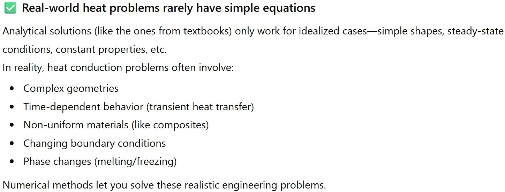
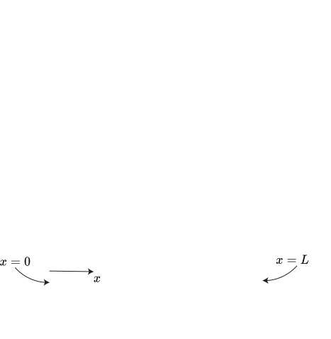
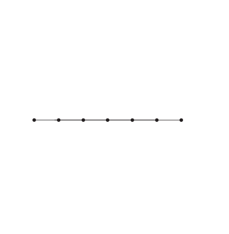
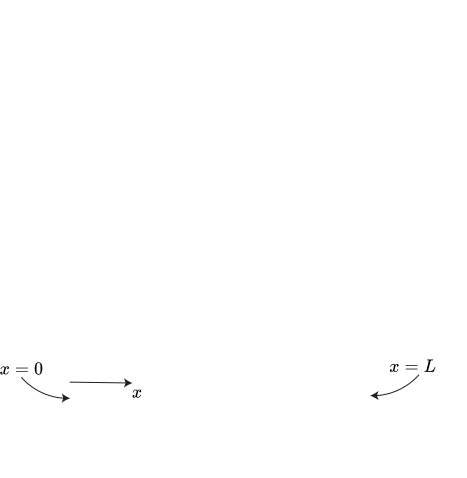
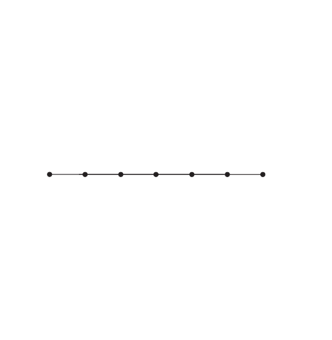
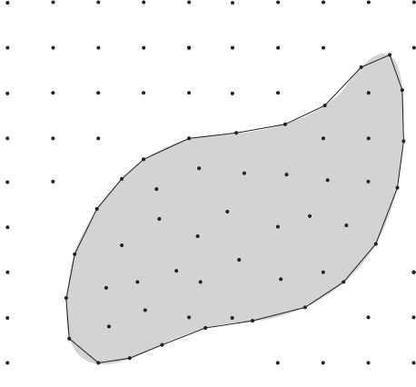
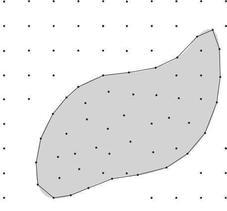

Heat Transfer
Steady heat conduction using numerical methods
Lecturer: Jakob Hærvig
Why look at numerical methods for heat conduction?
Two approaches to solve heat conduction problems
Finite difference method
$$ \small \frac{\text{d}^2T}{\text{d} x^2}+\frac{\dot{g}}{k}= 0 $$
Energy balance method
$$ \small \sum_\text{all surfaces} \dot{Q} + \dot{G}_\text{element} = 0 $$
Finite difference method for 1D problems
Notation for 1D finite difference problems
A 1D plane wall is defined as being infinitely long (i.e. heat transfer only occurs in one direction)
- $x=0$ at left side of wall
- $x=L$ at right side of wall
- $m=1$ at left side of wall
- $m=M$ at right side of wall
- $T_5$: Temperature at $m=5$
- $ \rho_5 $: Density at node $m=5$
- ...
 



Recalling finite differences from old days 🙂
Consider a function $f$ that depends on $x$. The first derivative is then defined as the slope of the tangent:
\( \frac{\text{d}f(x)}{\text{d}x} \) \(= \text{lim}_{\Delta x \to 0} \frac{f(x+\Delta x)-f(x)}{\Delta x}\)
\( \frac{\text{d}f(x)}{\text{d}x} \) \(\approx \frac{f(x+\Delta x)-f(x)}{\Delta x}\)
Applying finite differences to our 1D domain
Remember, we are looking for:
$$ \frac{\partial^2 T}{\partial x^2} $$We may approximate first derivative at midpoints as:
\( \frac{\partial T}{\partial x} \big|_{x_{m-1/2}} \) \( \approx \frac{T_{m}-T_{m-1}}{\Delta x} \) \( ~~~\text{and} ~~~ \) \( \frac{\partial T}{\partial x} \big|_{x_{m+1/2}} \) \( \approx \frac{T_{m+1}-T_{m}}{\Delta x} \)
... now, we can approximate the second derivative using two first-order derivatives:
\( \frac{\partial^2 T}{\partial x^2} \big|_{x_m} \) \( \approx \frac{\frac{\partial T}{\partial x} \big|_{x_{m+1/2}} - \frac{\partial T}{\partial x} \big|_{x_{m-1/2}}}{\Delta x} \) \(= \frac{\frac{T_{m+1}-T_{m}}{\Delta x} - \frac{T_{m}-T_{m-1}}{\Delta x}}{\Delta x} \)
... which reduces to:
\( \frac{\partial^2 T}{\partial x^2} \big|_{x_m} \) \( \approx \frac{T_{m-1}-2T_{m}+T_{m+1}}{\Delta x^2} \)
The equation for steady one-dimensional heat conduction now becomes:
\( \displaystyle \frac{T_{m-1}-2T_{m}+T_{m+1}}{\Delta x^2} + \frac{\dot{g}}{k}= 0 \)
Exercise: Centre temperature in a plate by the finite difference method
Consider a aluminium plate of length $L=0.5$ cm and thermal conductivity $k=205$ W/(m·K) in which no heat is generated ($\dot{g}=0$). One side of the plate is maintained at 0 °C by icy water while the other is maintained at 100 °C. Estimate the temperature in the centre at node 1.
Energy balance method for 1D problems
Notation for 1D energy balance problems
A 1D plane wall is defined as being infinitely long (i.e. heat transfer only occurs in one direction)
- $x=0$ at left side of wall
- $x=L$ at right side of wall
- $m=1$ at left side of wall
- $m=M$ at right side of wall
- Properties are assumed constant within each volume element
- The finer the mesh (smaller $\Delta x$), the more accurate the solution
- $T_5$: Temperature at $m=5$
- $ \rho_5 $: Density at node $m=5$
- ...
The energy balance equation for interior nodes
We sum up heat transfer to/from volume element:
$$ \small \left( \begin{array}{ccc} \text{Sum of heat}\\ \text{transfer rate}\\ \text{across surfaces}\\ \text{of volume element} \end{array} \right) + \left( \begin{array}{ccc} \text{Rate of heat}\\ \text{generation}\\ \text{inside the}\\ \text{element} \end{array} \right) = \left( \begin{array}{ccc} \text{Rate of change}\\ \text{of the energy}\\ \text{content of}\\ \text{the element} \end{array} \right) $$
$$ \small \sum_\text{all surfaces} \dot{Q} + \dot{G}_\text{element} = \frac{\Delta E_\text{element}}{\Delta t} = 0 $$
- $\dot{G}_\text{element}$ is the heat generation rate in the element (W):
$$ \dot{G}_\text{element} = \dot{g}V_\text{element} $$
- $\dot{g}$ is the volumetric heat generation rate in the element ($\text{W}/\text{m}^3$)

Convention for heat transfer direction
Assumed direction of heat transfer is irrelevant as long as we are consistent
Energy balance on control volume: $$\small kA \frac{T_{m-1}-T_m}{\Delta x}-kA\frac{T_m-T_{m+1}}{\Delta x} + \dot{g}_m A \Delta x=0$$
Conclusion: In both cases, it reduces to the same expression: $$\small T_{m-1}-2T_m+T_{m+1}+\frac{\dot{g}_m\Delta x^2}{kA}=0$$
Energy balance on control volume: $$\small kA \frac{T_{m-1}-T_m}{\Delta x}+kA\frac{T_{m+1}-T_{m}}{\Delta x} + \dot{g}_m A \Delta x=0$$
The four boundary condition types
We have to specify boundary conditions on each non-internal node.
- Constant temperature
- Constant heat flux
- Convection
- Radiation
$T_0 = c$
$\dot{Q}_\text{left,surface}=\dot{q}A=c$
$\dot{Q}_\text{left,surface}=hA\left(T_\infty-T_0 \right)=c$
$\dot{Q}_\text{left,surface}=\epsilon \sigma A \left(T_\text{surr}^4-T_0^4\right)=c$
Incorporating the different boundary conditions
Type 1 (constant temperature):
- We simply set the temperature of the node, e.g. $T_0 = c$
Type 2-4:
- We apply an energy balance on the volume element:
$$ \small \begin{aligned} \small \sum_\text{all surfaces} \dot{Q} + \dot{G}_\text{element} = 0, \end{aligned} $$
$$\small \dot{Q}_\text{left,surface} + kA \frac{T_1-T_0}{\Delta x}+\dot{g}_0\left(\frac{\Delta x}{2}A\right)=0.$$
- Expression for $\dot{Q}_\text{left,surface}$ depends on boundary condition type type
Incorporating mixed boundary condition types
All BC types (heat flux, convection and radiation) can easily be added to form mixed types:
\( \dot{Q}_\text{left,surface}\) \(= \) \( \dot{q}_0 A \) \( ~+ ~\) \(h A \left(T_\infty-T_0\right) \) \( ~+ ~\) \( \epsilon \sigma A \left(T_\text{surr}^4-T_0^4\right) \)
Mirror concept for insulated boundaries (e.g zero heat flux)
Insulated boundary (zero heat flux) can be modelled using mirror nodes:
\( \displaystyle \frac{T_{m+1}-2T_m+T_{m-1}}{\Delta x^2} + \frac{\dot{g}}{k} = 0 \)
\( \displaystyle \frac{T_{1}-2T_0+T_{1}}{\Delta x^2} + \frac{\dot{g}}{k} = 0 \)
Interfaces between different materials
Starting with the general energy balance:
$$ \displaystyle \begin{aligned} \sum_\text{all surfaces} \dot{Q} + \dot{G}_\text{element} = 0, \end{aligned} $$
\( \displaystyle k_1 A \frac{T_{m-1}-T_m}{\Delta x_1} + k_2 A \frac{T_{m+1}-T_m}{\Delta x_2}\) \(\displaystyle+ \dot{g}_A A \Delta \frac{x}{2} + \dot{g}_B A \Delta \frac{x}{2}\) \( \displaystyle= 0\)
Exercise: Centre temperature in a plate by the energy balance method
Consider a aluminium plate of length $L=4$ cm and thermal conductivity $k=28$ W/(m·K) in which heat is
generated at a rate
$\dot{g}=5\cdot 10^6$ W/m³. The left side is maintained at 0°C and the right
side is exposed to convection with $h=45$ W/(m²·K) and ambient temperature of $T_\infty=30$°C. Find
$T_2$.
Energy balance method for 2D (and 3D) problems
Notation for 2D energy balance problems
Double subscripts ($m$,$n$) to denote two dimensions (triple for three dimensions)
- $m$ used for $x$-direction
- $n$ used for $y$-direction
- Temperature at node ($m=1$, $n=0$) is written $T_{1,0}$
- Distances between nodes are $\Delta x$ and $\Delta y$
- Form volume elements around each node
- Convert from node number to actual coordinates by:
- $x=m\Delta x$
- $y=n\Delta y$
The energy balance equation for interior nodes
We sum up heat transfer to/from volume element:
$$ \small \left( \begin{array}{ccc} \text{Sum of heat}\\ \text{transfer rate}\\ \text{across surfaces}\\ \text{of volume element} \end{array} \right) + \left( \begin{array}{ccc} \text{Rate of heat}\\ \text{generation}\\ \text{inside the}\\ \text{element} \end{array} \right) = \left( \begin{array}{ccc} \text{Rate of change}\\ \text{of the energy}\\ \text{content of}\\ \text{the element} \end{array} \right) $$
$$ \small \sum_\text{all surfaces} \dot{Q} + \dot{G}_\text{element} = \frac{\Delta E_\text{element}}{\Delta t} = 0 $$
\( \dot{Q}_\text{left,cond} \) \( + \) \( \dot{Q}_\text{right,cond} \) \( + \) \( \dot{Q}_\text{bottom,cond} \) \( + \) \( \dot{Q}_\text{top,cond} \) \( + \) \( \dot{G}_\text{element} \) \( = 0 \)
- .. or in terms of node numbers:
\( \displaystyle k A \frac{T_{m-1,n}-T_{m,n}}{\Delta x}\)
\( + \)
\( \displaystyle k A \frac{T_{m+1,n}-T_{m,n}}{\Delta x}\)
\( + \)
\( \displaystyle k A \frac{T_{m,n-1}-T_{m,n}}{\Delta y}\)
\( + \)
\( \displaystyle k A \frac{T_{m,n+1}-T_{m,n}}{\Delta y}\)
\( + \)
\( \dot{g}_{m,n}(\Delta x \Delta y) \)
\( = 0 \)
The energy balance equation for boundary nodes
We sum up heat transfer to/from volume element:
$$ \small \left( \begin{array}{ccc} \text{Sum of heat}\\ \text{transfer rate}\\ \text{across surfaces}\\ \text{of volume element} \end{array} \right) + \left( \begin{array}{ccc} \text{Rate of heat}\\ \text{generation}\\ \text{inside the}\\ \text{element} \end{array} \right) = \left( \begin{array}{ccc} \text{Rate of change}\\ \text{of the energy}\\ \text{content of}\\ \text{the element} \end{array} \right) $$
- For a volume element on the left boundary:
- .. or in terms of node numbers:
- The expression for $\dot{Q}_\text{left surface}$ depends on the type of boundary condition
\( \dot{Q}_\text{left,surface} \) \( + \) \( \dot{Q}_\text{right,cond} \) \( + \) \( \dot{Q}_\text{bottom,cond} \) \( + \) \( \dot{Q}_\text{top,cond} \) \( + \) \( \dot{G}_\text{element} \) \( = 0 \)
$\displaystyle \dot{Q}_\text{left surface}$
$~+~$
$\displaystyle k\Delta y\frac{T_{1,n}-T_{0,n}}{\Delta
x}$
$~+~$
$\displaystyle k\frac{\Delta
x}{2}\frac{T_{0,n-1}-T_{0,n}}{\Delta y}$
$~+~$
$\displaystyle k\frac{\Delta
x}{2}\frac{T_{0,n+1}-T_{0,n}}{\Delta y}$
$~+~$
$ \displaystyle \dot{g}_{0,n}(\frac{\Delta x}{2} \Delta
y)$
$~=~$
$0$
Handling irregular boundaries
Different approaches to irregular boundaries:
- Baseline: Approximate the shape using regular grid (stair-step approach)
- Use smaller volume elements near the boundary to better approximate the shape
- Use irregular boundary volume elements that conform to the shape
 

Exercise: Steady Two-Dimensional Heat Conduction
Determine the temperature at the 15 nodes. Thermal conductivity is $k = 15$ W/m·K, and heat is generated in the body at a rate of $\dot{q} = 2 \times 10^6$ W/m³. The left surface of the body is insulated, and the bottom surface is maintained at a uniform temperature of $90^\circ \text{C}$. The entire top surface is subjected to convection to ambient air at $T_\infty = 25^\circ \text{C}$ with a convection coefficient of $h = 80$ W/m²·K, and the right surface is subjected to heat flux at a uniform rate of $\dot{q}_R = 5000$ W/m². The nodal network of the problem consists of 15 equally spaced nodes with $\Delta x = \Delta y = 1.2$ cm.